SIDEBAR BALANCE · 24 SEPTEMBER 2026
Less chrome.
More useful content.
Keep the vertical icon-and-text tabs. Make their hierarchy quieter, return space to the lists, and give every panel a clear rhythm.
26ptNavigation targets, with equal text contrast
2 complete groupsVisible in the real 176 × 296pt minimum fixture
All functions retainedIncluding group visibility and History actions
01 / PRODUCTION CONTROLS
The difference is the space.
These images render AppKit production views in hidden test windows. They are not captures of the running reader.
Groups gets the room back.
The old layout spends most of a short sidebar on navigation, counts, search and help. The revised layout shows two groups and a document before scrolling.
- Neutral mode selection; accent for the current document.
- Search above the list; counts and contextual help below.
- 36pt group rows and 26pt documents.

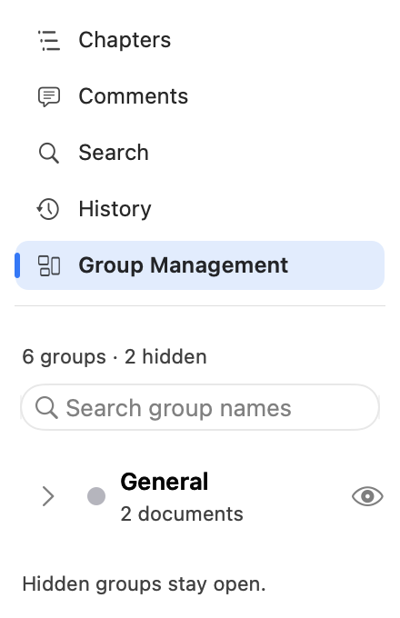

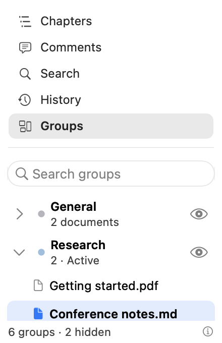
Saved versions come first.
History no longer repeats its title or puts recovery prose and a tower of actions ahead of the revisions. The missing-original state stays explicit.
This pair is not a matched-width comparison: the before fixture is 220 × 300pt; the after fixture is the genuine 176 × 296pt minimum. Recovery and secondary actions remain reachable by scrolling.

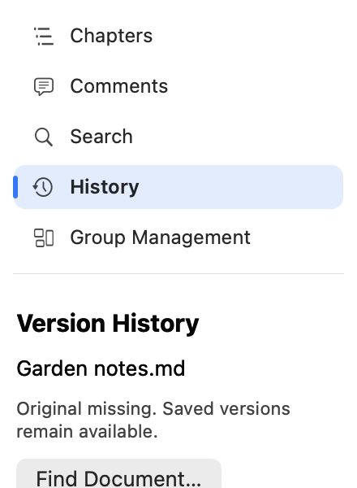

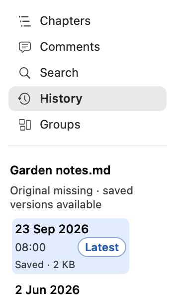
02 / NATIVE EVIDENCE
Light, dark, and genuinely narrow.
Click any image to inspect its full-resolution render. Images use their point dimensions below; the source PNGs are Retina.

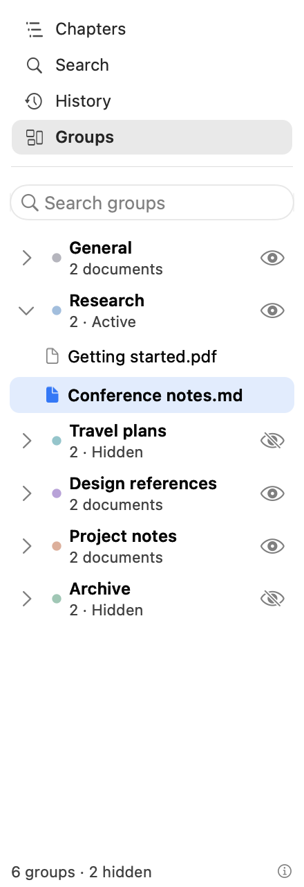

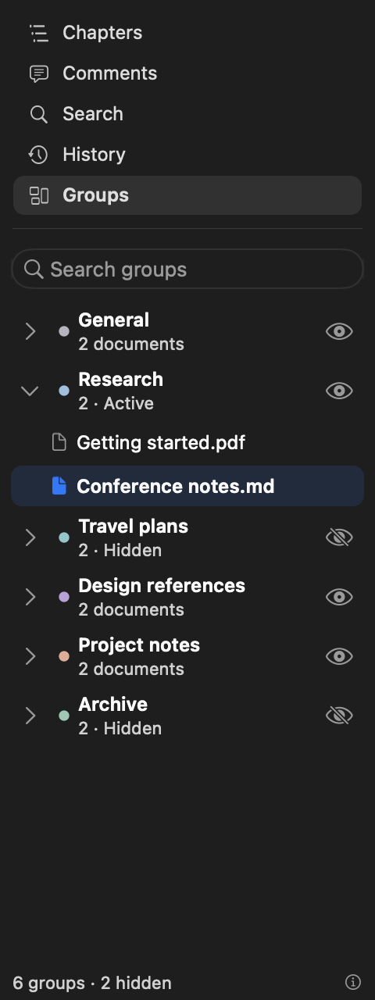

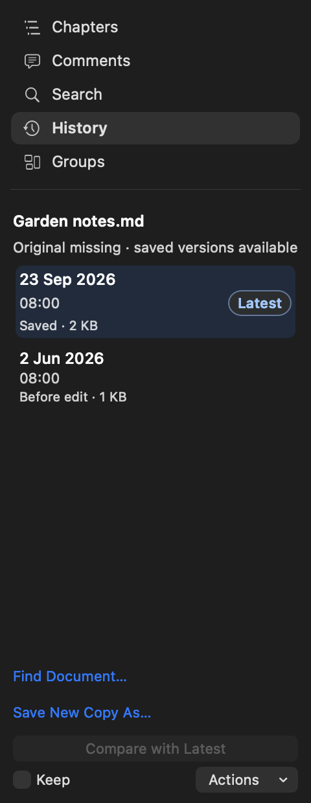

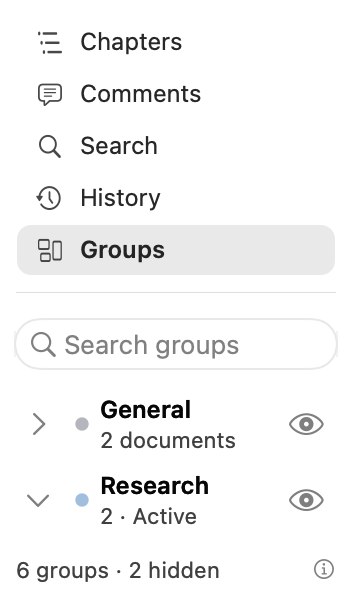

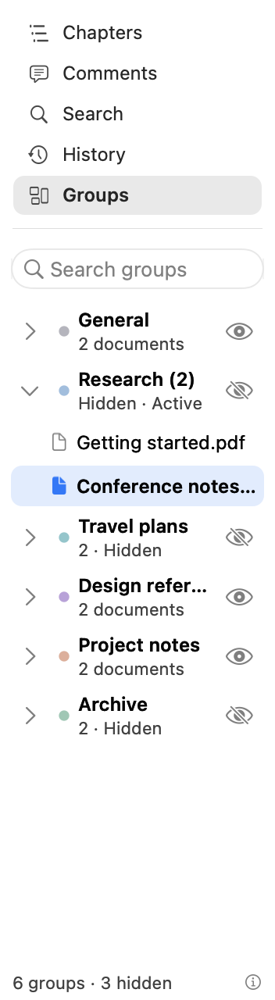

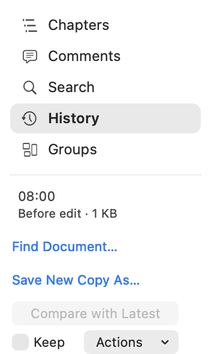

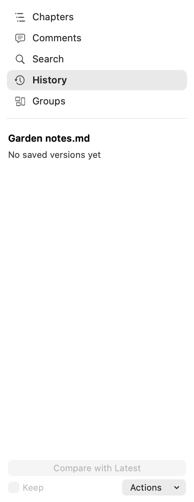
What this establishes: production-view geometry, real 176pt width, readable states and tested action routing. It does not establish live VoiceOver speech, trackpad feel, or a screenshot of the whole running reader.
03 / WHOLE-READER ILLUSTRATIONS
Why the stacked layout wins.
The following comparison is CSS illustration, not native-render evidence. Its purpose is to compare sidebar and page proportions.
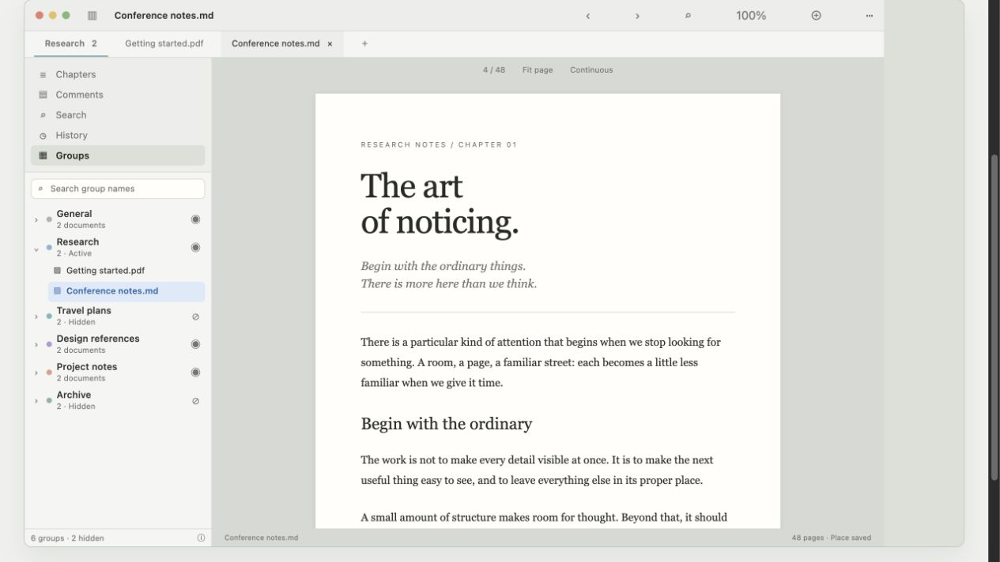
Explore the whole-reader comparison ↗Recommended. Keeps the reader width and the familiar vertical modes.
BTwo-column workspace340pt sidebar. More task height, but 100pt less space for the page.
CModes at the bottomContent starts higher. No space is recovered, and modes move away from their context.
The early CSS History scene is retired. It reserved too much fixed action space at minimum height and is not representative of the implemented design. Use the native History renders above.
REVIEW TRAIL
Design, evidence, then review.
The rationale records the constraints and preserved behavior. Independent review notes remain separate from the images; prior component grades do not validate this redesign.